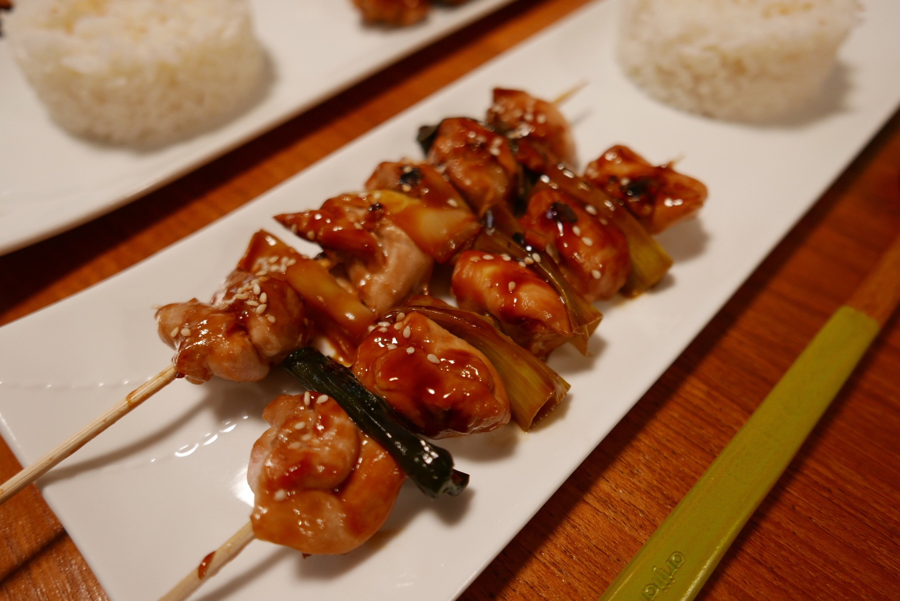

Yakitori

Description
Yakitori is a Japanese dish of grilled chicken skewers, seasoned with a soy-based sauce. These succulent skewers
are often enjoyed as street food or in casual parlors, where they're cooked over a charcoal fire
until perfectly charred and flavorful. The simplicty of yakitori lies in its focus on quality ingredients and expert
grilling technique.
Ingredients
- Chicken thighs: Cut into small pieces and skewered.
- Salt: Used for seasoning.
- Soy sauce: Key component of the marinade.
- Sake: Another ingredient in the marinade.
- Sugar: Balances flavors and adds sweetness.
- Green onions: Often skewered alongside chicken.
- Garlic and ginger: Flavor enhancers.
- Honey, rice vinegar, and sesame oil: Used in some variations of the sauce.
Steps
- Prepare the Yakitori Sauce:
- In a saucepan, whisk together ½ cup soy sauce, ¼ cup sake, ¼ cup mirin, and ¼ cup sugar.
- Add minced garlic and ginger for extra flavor.
- Simmer over medium-high heat until the sauce reduces by half and becomes thick and syrupy (about 5-6 minutes). Let it to cool.
- Cut and Skewer:
- Cut boneless chicken thighs into bite-sized cubes.
- Cut white parts of green onions into 1-inch pieces.
- Thread the chicken and onion pieces alternately onto bamboo skewers.
- Broil the Skewers:
- Place the skewers on an oven-safe wire rack coated with oil or cooking spray, set on a foil-lined baking sheet.
- Cover the handles with foil to prevent burning.
- Preheat the broiler to High.
- Broil the skewers for 6 minutes.
- Brush with sauce:
- Brush the skewers with the reversed yakitori sauce.
- Broil for an additional 3-4 minutes until caramelized and perfectly charred.
- Serve:
- Serve the yakitori with extra sauce for dipping.